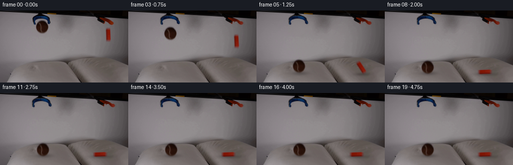
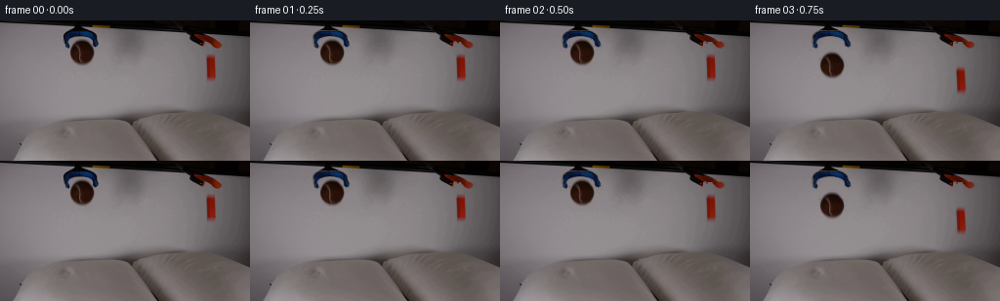

CODING AGENTS AS PIXEL WORLD MODELS
traex/GPT-6.1-Sol · 0001
点击播放 · 原生 RGB 像素
逐轮保存的候选
回放视频、检查图与代码变化。
每份候选均可单独播放。实际图片检查记录在下方工具轨迹中。
候选 01播放与检查图
点击播放 · 原生 RGB 像素


展开代码变化
--- 上一保存版本
+++ 本次保存版本
@@ -0,0 +1,226 @@
+from pathlib import Path
+import math
+import numpy as np
+from PIL import Image
+from scipy.ndimage import gaussian_filter, map_coordinates
+import cv2
+import artifact_io
+
+ROOT = Path(__file__).resolve().parent
+H, W = 144, 256
+Y, X = np.mgrid[:H, :W].astype(np.float32)
+
+
+def polynomial_plate(image, box, exclusion, degree=3):
+ x0,y0,x1,y1=box
+ xx=(X-(x0+x1)/2)/((x1-x0)/2)
+ yy=(Y-(y0+y1)/2)/((y1-y0)/2)
+ powers=[(i,j) for i in range(degree+1) for j in range(degree+1-i)]
+ fields=np.stack([xx**i*yy**j for i,j in powers],axis=-1)
+ valid=(X>=x0)&(X<x1)&(Y>=y0)&(Y<y1)&~exclusion
+ # Fit the unchanged, subtly vignetted surface surrounding each moving object.
+ coeff=np.linalg.lstsq(fields[valid].astype(np.float64),image[valid],rcond=None)[0]
+ return np.clip(fields@coeff,0,255).astype(np.float32)
+
+
+def unmat(image, plate, alpha):
+ a=alpha[...,None]
+ colors=(image-plate*(1-a))/np.maximum(a,0.025)
+ return np.clip(colors,0,255).astype(np.float32)
+
+
+def over(base, rgb, alpha):
+ return base*(1-alpha[...,None])+rgb*alpha[...,None]
+
+
+def warp_layer(rgb, alpha, matrix):
+ # Premultiplied resampling avoids a dark/grey border around moving silhouettes.
+ p=cv2.warpAffine(rgb*alpha[...,None],matrix,(W,H),flags=cv2.INTER_LINEAR,borderMode=cv2.BORDER_CONSTANT)
+ a=cv2.warpAffine(alpha,matrix,(W,H),flags=cv2.INTER_LINEAR,borderMode=cv2.BORDER_CONSTANT)
+ return p,a
+
+
+def affine(cx,cy,nx,ny,angle=0,sx=1,sy=1):
+ co,si=math.cos(angle),math.sin(angle)
+ a=np.array([[co*sx,-si*sy],[si*sx,co*sy]],np.float32)
+ return np.c_[a,np.array([nx,ny],np.float32)-a@np.array([cx,cy],np.float32)].astype(np.float32)
+
+
+def generate():
+ original=np.asarray(Image.open(ROOT/'first_frame.png').convert('RGB'),dtype=np.uint8)
+ image=original.astype(np.float32)
+ rng=np.random.default_rng(37)
+ # Local reconstruction only: all other scene pixels stay locked to the source.
+ rb=np.sqrt(((X-84.3)/12.8)**2+((Y-32.6)/13.5)**2)
+ bluebox=(X>=63)&(X<=102)&(Y>=10)&(Y<=30)
+ ballzone=rb<1.24
+ exclude=ballzone|bluebox|((Y<12)&(X>62)&(X<102))
+ lp=polynomial_plate(image,(53,12,114,55),exclude,3)
+ rz=(X>=207)&(X<=240)&(Y>=21)&(Y<=31)
+ blockzone=(X>=209)&(X<=224)&(Y>=32)&(Y<=65)
+ right_ex=rz|blockzone|((Y<32)&(X>=185))
+ rp=polynomial_plate(image,(197,30,240,74),right_ex,2)
+ noise=gaussian_filter(rng.normal(0,0.60,(H,W)),0.3).astype(np.float32)
+ lp=lp+noise[...,None]
+ rp=rp+noise[...,None]
+
+ # The ball's original felt, curved seam and studio lighting are carried with it.
+ expected_g=10+15*np.clip((Y-23)/21,0,1)
+ ba=np.clip((lp[...,1]-image[...,1])/np.maximum(lp[...,1]-expected_g,30),0,1)
+ core=((X-84.3)/10.4)**2+((Y-32.4)/10.7)**2<1
+ ba[core]=1
+ ba*=np.clip((1.25-rb)/0.13,0,1)
+ ba*=~((image[...,2]>image[...,0]+7)&(image[...,2]>image[...,1]+7))
+ ba[~ballzone]=0
+ ball_rgb=unmat(image,lp,ba)
+
+ # Orange block: alpha is recovered from its contrasting green channel.
+ oa=np.clip((rp[...,1]-image[...,1])/np.maximum(rp[...,1]-23,30),0,1)
+ oa[~blockzone]=0
+ # Keep texture and the darker side face opaque in the interior.
+ coreblock=(X>=213)&(X<=219)&(Y>=39)&(Y<=57)
+ oa[coreblock]=1
+ oa*=np.clip((X-209)/1.4,0,1)*np.clip((224-X)/1.4,0,1)
+ orange_rgb=unmat(image,rp,oa)
+
+ # Blue grabber ends are opened outwards, preserving their existing material.
+ ta=np.clip((lp[...,0]-image[...,0])/np.maximum(lp[...,0]-8,20),0,1)
+ tregion=bluebox & ((Y<=18)|(X<=74)|(X>=94))
+ ta*=tregion
+ ta*=np.clip((image[...,2]-image[...,0]+8)/15,0,1)
+ blue_rgb=unmat(image,lp,ta)
+
+ # Only the two finger tips of the right grabber articulate; its shaft is fixed.
+ rta=np.clip((rp[...,1]-image[...,1])/np.maximum(rp[...,1]-18,20),0,1)
+ rregion=((Y>=22)&(Y<=29)&(X>=215)&(X<=239))|((Y>=22)&(Y<=27)&(X>=208)&(X<=214))
+ rta*=rregion
+ red_rgb=unmat(image,rp,rta)
+
+ clean=image.copy()
+ # Remove original ball and block (including their defocused boundaries).
+ bpatch=np.clip((1.26-rb)/0.10,0,1)
+ bpatch*=~((image[...,2]>image[...,0]+7)&(image[...,2]>image[...,1]+7))
+ clean=over(clean,lp,bpatch)
+ opatch=np.zeros((H,W),np.float32)
+ opatch[33:64,210:223]=1
+ opatch=gaussian_filter(opatch,0.38)
+ clean=over(clean,rp,opatch)
+ # Alpha-aware replacement at the tool silhouettes; near-opaque masks remove
+ # their old positions without erasing the surrounding stationary apparatus.
+ treplace=np.clip(ta*7,0,1)
+ clean=over(clean,lp,treplace)
+ rreplace=np.clip(rta*7,0,1)
+ clean=over(clean,rp,rreplace)
+
+ # Mechanical motion, in real time. A damped cushion absorbs almost all energy.
+ release=0.50
+ gravity=420.0
+ ball_start=32.6
+ ball_contact=113.0
+ ball_hit=release+math.sqrt(2*(ball_contact-ball_start)/gravity)
+ block_start=48.0
+ block_contact=113.5
+ block_hit=release+math.sqrt(2*(block_contact-block_start)/gravity)
+ dt=1/2000
+ state_y=ball_start
+ state_v=0.0
+ samples=[]
+ for step in range(int(5/dt)+1):
+ t=step*dt
+ if t>release:
+ force=gravity
+ if state_y>ball_contact:
+ force-=1150*(state_y-ball_contact)+23*state_v
+ state_v+=force*dt
+ state_y+=state_v*dt
+ samples.append(state_y)
+
+ output=[]
+ for frame in range(20):
+ t=frame/4
+ if frame==0:
+ output.append(original.copy())
+ continue
+ opening=np.clip((t-0.05)/0.40,0,1)
+ opening=float(opening*opening*(3-2*opening))
+ canvas=clean.copy()
+ # Open blue jaws about the fixed hinge, spreading progressively toward ends.
+ spread=4.0*opening*np.clip((Y-11)/18,0,1)
+ scale=1+spread/18
+ source_x=82+(X-82)/scale
+ a=cv2.remap(ta,source_x.astype(np.float32),Y,cv2.INTER_LINEAR,borderMode=cv2.BORDER_CONSTANT)
+ p=cv2.remap(blue_rgb*ta[...,None],source_x.astype(np.float32),Y,cv2.INTER_LINEAR,borderMode=cv2.BORDER_CONSTANT)
+ canvas=canvas*(1-a[...,None])+p
+ # Right jaws separate around the released narrow block.
+ for left in [True,False]:
+ mask=(X<215) if left else (X>=215)
+ alpha=rta*mask
+ mat=affine(215,20,215+(-2.2 if left else 2.7)*opening,20+(.3 if left else -.3)*opening)
+ p,a=warp_layer(red_rgb,alpha,mat)
+ canvas=canvas*(1-a[...,None])+p
+
+ elapsed=max(0,t-release)
+ by=float(samples[min(round(t/dt),len(samples)-1)])
+ after=max(0,t-ball_hit)
+ bx=84.3+1.5*(1-math.exp(-after*4))
+ ball_angle=math.radians(7)*(1-math.exp(-after*3))
+ ball_sink=max(0,by-ball_contact)
+ ball_dent=min(3.2,ball_sink*0.65)
+ if after>0.8:
+ ball_dent=max(ball_dent,0.5)
+
+ if t<=block_hit:
+ oy=block_start+0.5*gravity*elapsed**2
+ ox=216.0
+ angle=math.radians(-5)*min(elapsed/(block_hit-release),1)**2
+ else:
+ u=np.clip((t-block_hit)/.52,0,1)
+ # A slender upright block tips onto its long side, pivoting at the
+ # bottom-left corner instead of hovering or teleporting sideways.
+ smooth=u*u*(3-2*u)
+ angle=math.radians(-5-85*smooth)
+ if u>=1:
+ v=t-(block_hit+.52)
+ angle+=math.radians(2)*math.exp(-v*9)*math.sin(v*24)
+ co,si=math.cos(angle),math.sin(angle)
+ ox=212+4*co+12.5*si
+ oy=126+4*si-12.5*co
+ block_after=max(0,t-block_hit)
+ block_dent=1.9*math.exp(-block_after*4)*math.sin(min(block_after*9,math.pi/2)) if block_after else 0
+
+ # Very localized fabric response. The table and camera remain immobile.
+ bd=np.exp(-((X-bx)/17)**2-((Y-124)/8)**2)*(Y>103)
+ od=np.exp(-((X-ox)/16)**2-((Y-126)/7)**2)*(Y>109)
+ dy=ball_dent*bd+block_dent*od
+ if np.max(dy)>0.01:
+ canvas=cv2.remap(canvas,X,(Y-dy).astype(np.float32),cv2.INTER_LINEAR,borderMode=cv2.BORDER_REPLICATE)
+ canvas-= (ball_dent*1.3*bd+block_dent*1.2*od)[...,None]
+
+ # Height-dependent, soft contact shadows on the pillows, not on backdrop.
+ bh=max(0,ball_contact-by)
+ balpha=.22*math.exp(-bh/25)+.015
+ bs=np.exp(-.5*(((X-(bx+1.2))/(12+bh*.045))**2+((Y-125)/(2.8+bh*.045))**2))
+ bs*=((Y>105)&(Y<142))
+ canvas*=1-(balpha*bs)[...,None]
+ oh=max(0,block_contact-oy) if t<=block_hit else 0
+ horizontal=abs(math.sin(angle))
+ os=np.exp(-.5*(((X-(ox+1))/(5+horizontal*9+oh*.035))**2+((Y-127)/(2.2+oh*.04))**2))
+ os*=((Y>108)&(Y<142))
+ canvas*=1-((.20*math.exp(-oh/22)+.012)*os)[...,None]
+
+ # Ball and block retain their source appearance at subpixel positions.
+ squish=1-.015*min(ball_sink/4,1)
+ mat=affine(84.3,32.6,bx,by,ball_angle,sx=1+(.012 if ball_sink>1 else 0),sy=squish)
+ p,a=warp_layer(ball_rgb,ba,mat)
+ canvas=canvas*(1-a[...,None])+p
+ mat=affine(216,48,ox,oy,angle)
+ p,a=warp_layer(orange_rgb,oa,mat)
+ canvas=canvas*(1-a[...,None])+p
+ output.append(np.clip(np.rint(canvas),0,255).astype(np.uint8))
+ return np.stack(output)
+
+
+if __name__=='__main__':
+ frames=generate()
+ assert np.array_equal(frames[0],np.asarray(Image.open(ROOT/'first_frame.png').convert('RGB')))
+ artifact_io.save(frames,ROOT)
可观测工具轨迹
实际执行的命令与返回图片。
命令 1exit 0
/bin/bash -lc "ls -la && cat prompt.txt && printf '\\n---RULES---\\n' && cat GENERATION_RULES.md"
命令 2exit 0
/bin/bash -lc "cat artifact_io.py && python - <<'PY'
from PIL import Image
import numpy as np
im=np.array(Image.open('first_frame.png').convert('RGB'))
print(im.shape)
# 4 pixel grid luminance ascii
chars=' .,:;irsXA253hMHGS#9B&@'
a=np.mean(im,axis=2)
for y in range(0,144,3):
print(''.join(chars[int(a[y:y+3,x:x+3].mean()/256*len(chars))] for x in range(0,256,3)))
print('colors block means')
for y in range(0,144,8):
print(y,[(x,tuple(np.mean(im[y:y+8,x:x+8],axis=(0,1)).astype(int))) for x in range(0,256,16)])
PY"命令 3exit 0
/bin/bash -lc "python - <<'PY'
import numpy as np
from PIL import Image
im=np.array(Image.open('first_frame.png')).astype(int)
# r warm, b blue, dark #, background dot
for x0,x1,y0,y1 in [(55,109,0,51),(184,231,0,68),(0,256,90,144)]:
print('\\nREGION',x0,x1,y0,y1)
print(' '+''.join(str(x%10) for x in range(x0,x1)))
for y in range(y0,y1):
s=''
for x in range(x0,x1):
r,g,b=im[y,x]; lum=(r+g+b)/3
c='.'
if lum<20:c='#'
elif lum<50:c='D'
elif lum<75:c='s'
elif lum<100:c=':'
elif lum<120:c='-'
elif lum<140:c=' '
else:c='+'
if b>r+8 and b>g+8:c='B' if b>65 else 'b'
if r>g+13 and r>b+13:c='o' if r>100 else 'w' if r>50 else 'd'
if r>g+40:c='O' if r>120 else 'r'
s+=c
print(f'{y:3} '+s)
PY"命令 4exit 0
/bin/bash -lc "python - <<'PY'
from PIL import Image
import numpy as np
im=np.array(Image.open('first_frame.png'))
for yy in [20,22,24,28,30,32,36,40,43,44,45]:
print('BALL',yy,[(xx,tuple(im[yy,xx])) for xx in range(70,100)])
for yy in [32,33,34,35,36,37,38,40,44,50,56,59,60,61,62,63,64]:
print('BLOCK',yy,[(xx,tuple(im[yy,xx])) for xx in range(208,225)])
PY"命令 5exit 0
/bin/bash -lc "python - <<'PY' import importlib.util for s in ['numpy','PIL','scipy','cv2']: print(s,importlib.util.find_spec(s)) PY"
命令 6exit 0
/bin/bash -lc "cat > generate.py <<'PY'
from pathlib import Path
import math
import numpy as np
from PIL import Image
from scipy.ndimage import gaussian_filter, map_coordinates
import cv2
import artifact_io
ROOT = Path(__file__).resolve().parent
H, W = 144, 256
Y, X = np.mgrid[:H, :W].astype(np.float32)
def polynomial_plate(image, box, exclusion, degree=3):
x0,y0,x1,y1=box
xx=(X-(x0+x1)/2)/((x1-x0)/2)
yy=(Y-(y0+y1)/2)/((y1-y0)/2)
powers=[(i,j) for i in range(degree+1) for j in range(degree+1-i)]
fields=np.stack([xx**i*yy**j for i,j in powers],axis=-1)
valid=(X>=x0)&(X<x1)&(Y>=y0)&(Y<y1)&~exclusion
# Fit the unchanged, subtly vignetted surface surrounding each moving object.
coeff=np.linalg.lstsq(fields[valid].astype(np.float64),image[valid],rcond=None)[0]
return np.clip(fields@coeff,0,255).astype(np.float32)
def unmat(image, plate, alpha):
a=alpha[...,None]
colors=(image-plate*(1-a))/np.maximum(a,0.025)
return np.clip(colors,0,255).astype(np.float32)
def over(base, rgb, alpha):
return base*(1-alpha[...,None])+rgb*alpha[...,None]
def warp_layer(rgb, alpha, matrix):
# Premultiplied resampling avoids a dark/grey border around moving silhouettes.
p=cv2.warpAffine(rgb*alpha[...,None],matrix,(W,H),flags=cv2.INTER_LINEAR,borderMode=cv2.BORDER_CONSTANT)
a=cv2.warpAffine(alpha,matrix,(W,H),flags=cv2.INTER_LINEAR,borderMode=cv2.BORDER_CONSTANT)
return p,a
def affine(cx,cy,nx,ny,angle=0,sx=1,sy=1):
co,si=math.cos(angle),math.sin(angle)
a=np.array([[co*sx,-si*sy],[si*sx,co*sy]],np.float32)
return np.c_[a,np.array([nx,ny],np.float32)-a@np.array([cx,cy],np.float32)].astype(np.float32)
def generate():
original=np.asarray(Image.open(ROOT/'first_frame.png').convert('RGB'),dtype=np.uint8)
image=original.astype(np.float32)
rng=np.random.default_rng(37)
# Local reconstruction only: all other scene pixels stay locked to the source.
rb=np.sqrt(((X-84.3)/12.8)**2+((Y-32.6)/13.5)**2)
bluebox=(X>=63)&(X<=102)&(Y>=10)&(Y<=30)
ballzone=rb<1.24
exclude=ballzone|bluebox|((Y<12)&(X>62)&(X<102))
lp=polynomial_plate(image,(53,12,114,55),exclude,3)
rz=(X>=207)&(X<=240)&(Y>=21)&(Y<=31)
blockzone=(X>=209)&(X<=224)&(Y>=32)&(Y<=65)
right_ex=rz|blockzone|((Y<32)&(X>=185))
rp=polynomial_plate(image,(197,30,240,74),right_ex,2)
noise=gaussian_filter(rng.normal(0,0.60,(H,W)),0.3).astype(np.float32)
lp=lp+noise[...,None]
rp=rp+noise[...,None]
# The ball's original felt, curved seam and studio lighting are carried with it.
expected_g=10+15*np.clip((Y-23)/21,0,1)
ba=np.clip((lp[...,1]-image[...,1])/np.maximum(lp[...,1]-expected_g,30),0,1)
core=((X-84.3)/10.4)**2+((Y-32.4)/10.7)**2<1
ba[core]=1
ba*=np.clip((1.25-rb)/0.13,0,1)
ba*=~((image[...,2]>image[...,0]+7)&(image[...,2]>image[...,1]+7))
ba[~ballzone]=0
ball_rgb=unmat(image,lp,ba)
# Orange block: alpha is recovered from its contrasting green channel.
oa=np.clip((rp[...,1]-image[...,1])/np.maximum(rp[...,1]-23,30),0,1)
oa[~blockzone]=0
# Keep texture and the darker side face opaque in the interior.
coreblock=(X>=213)&(X<=219)&(Y>=39)&(Y<=57)
oa[coreblock]=1
oa*=np.clip((X-209)/1.4,0,1)*np.clip((224-X)/1.4,0,1)
orange_rgb=unmat(image,rp,oa)
# Blue grabber ends are opened outwards, preserving their existing material.
ta=np.clip((lp[...,0]-image[...,0])/np.maximum(lp[...,0]-8,20),0,1)
tregion=bluebox & ((Y<=18)|(X<=74)|(X>=94))
ta*=tregion
ta*=np.clip((image[...,2]-image[...,0]+8)/15,0,1)
blue_rgb=unmat(image,lp,ta)
# Only the two finger tips of the right grabber articulate; its shaft is fixed.
rta=np.clip((rp[...,1]-image[...,1])/np.maximum(rp[...,1]-18,20),0,1)
rregion=((Y>=22)&(Y<=29)&(X>=215)&(X<=239))|((Y>=22)&(Y<=27)&(X>=208)&(X<=214))
rta*=rregion
red_rgb=unmat(image,rp,rta)
clean=image.copy()
# Remove original ball and block (including their defocused boundaries).
bpatch=np.clip((1.26-rb)/0.10,0,1)
bpatch*=~((image[...,2]>image[...,0]+7)&(image[...,2]>image[...,1]+7))
clean=over(clean,lp,bpatch)
opatch=np.zeros((H,W),np.float32)
opatch[33:64,210:223]=1
opatch=gaussian_filter(opatch,0.38)
clean=over(clean,rp,opatch)
# Alpha-aware replacement at the tool silhouettes; near-opaque masks remove
# their old positions without erasing the surrounding stationary apparatus.
treplace=np.clip(ta*7,0,1)
clean=over(clean,lp,treplace)
rreplace=np.clip(rta*7,0,1)
clean=over(clean,rp,rreplace)
# Mechanical motion, in real time. A damped cushion absorbs almost all energy.
release=0.50
gravity=420.0
ball_start=32.6
ball_contact=113.0
ball_hit=release+math.sqrt(2*(ball_contact-ball_start)/gravity)
block_start=48.0
block_contact=113.5
block_hit=release+math.sqrt(2*(block_contact-block_start)/gravity)
dt=1/2000
state_y=ball_start
state_v=0.0
samples=[]
for step in range(int(5/dt)+1):
t=step*dt
if t>release:
force=gravity
if state_y>ball_contact:
force-=1150*(state_y-ball_contact)+23*state_v
state_v+=force*dt
state_y+=state_v*dt
samples.append(state_y)
output=[]
for frame in range(20):
t=frame/4
if frame==0:
output.append(original.copy())
continue
opening=np.clip((t-0.05)/0.40,0,1)
opening=float(opening*opening*(3-2*opening))
canvas=clean.copy()
# Open blue jaws about the fixed hinge, spreading progressively toward ends.
spread=4.0*opening*np.clip((Y-11)/18,0,1)
scale=1+spread/18
source_x=82+(X-82)/scale
a=cv2.remap(ta,source_x.astype(np.float32),Y,cv2.INTER_LINEAR,borderMode=cv2.BORDER_CONSTANT)
p=cv2.remap(blue_rgb*ta[...,None],source_x.astype(np.float32),Y,cv2.INTER_LINEAR,borderMode=cv2.BORDER_CONSTANT)
canvas=canvas*(1-a[...,None])+p
# Right jaws separate around the released narrow block.
for left in [True,False]:
mask=(X<215) if left else (X>=215)
alpha=rta*mask
mat=affine(215,20,215+(-2.2 if left else 2.7)*opening,20+(.3 if left else -.3)*opening)
p,a=warp_layer(red_rgb,alpha,mat)
canvas=canvas*(1-a[...,None])+p
elapsed=max(0,t-release)
by=float(samples[min(round(t/dt),len(samples)-1)])
after=max(0,t-ball_hit)
bx=84.3+1.5*(1-math.exp(-after*4))
ball_angle=math.radians(7)*(1-math.exp(-after*3))
ball_sink=max(0,by-ball_contact)
ball_dent=min(3.2,ball_sink*0.65)
if after>0.8:
ball_dent=max(ball_dent,0.5)
if t<=block_hit:
oy=block_start+0.5*gravity*elapsed**2
ox=216.0
angle=math.radians(-5)*min(elapsed/(block_hit-release),1)**2
else:
u=np.clip((t-block_hit)/.52,0,1)
# A slender upright block tips onto its long side, pivoting at the
# bottom-left corner instead of hovering or teleporting sideways.
smooth=u*u*(3-2*u)
angle=math.radians(-5-85*smooth)
if u>=1:
v=t-(block_hit+.52)
angle+=math.radians(2)*math.exp(-v*9)*math.sin(v*24)
co,si=math.cos(angle),math.sin(angle)
ox=212+4*co+12.5*si
oy=126+4*si-12.5*co
block_after=max(0,t-block_hit)
block_dent=1.9*math.exp(-block_after*4)*math.sin(min(block_after*9,math.pi/2)) if block_after else 0
# Very localized fabric response. The table and camera remain immobile.
bd=np.exp(-((X-bx)/17)**2-((Y-124)/8)**2)*(Y>103)
od=np.exp(-((X-ox)/16)**2-((Y-126)/7)**2)*(Y>109)
dy=ball_dent*bd+block_dent*od
if np.max(dy)>0.01:
canvas=cv2.remap(canvas,X,(Y-dy).astype(np.float32),cv2.INTER_LINEAR,borderMode=cv2.BORDER_REPLICATE)
canvas-= (ball_dent*1.3*bd+block_dent*1.2*od)[...,None]
# Height-dependent, soft contact shadows on the pillows, not on backdrop.
bh=max(0,ball_contact-by)
balpha=.22*math.exp(-bh/25)+.015
bs=np.exp(-.5*(((X-(bx+1.2))/(12+bh*.045))**2+((Y-125)/(2.8+bh*.045))**2))
bs*=((Y>105)&(Y<142))
canvas*=1-(balpha*bs)[...,None]
oh=max(0,block_contact-oy) if t<=block_hit else 0
horizontal=abs(math.sin(angle))
os=np.exp(-.5*(((X-(ox+1))/(5+horizontal*9+oh*.035))**2+((Y-127)/(2.2+oh*.04))**2))
os*=((Y>108)&(Y<142))
canvas*=1-((.20*math.exp(-oh/22)+.012)*os)[...,None]
# Ball and block retain their source appearance at subpixel positions.
squish=1-.015*min(ball_sink/4,1)
mat=affine(84.3,32.6,bx,by,ball_angle,sx=1+(.012 if ball_sink>1 else 0),sy=squish)
p,a=warp_layer(ball_rgb,ba,mat)
canvas=canvas*(1-a[...,None])+p
mat=affine(216,48,ox,oy,angle)
p,a=warp_layer(orange_rgb,oa,mat)
canvas=canvas*(1-a[...,None])+p
output.append(np.clip(np.rint(canvas),0,255).astype(np.uint8))
return np.stack(output)
if __name__=='__main__':
frames=generate()
assert np.array_equal(frames[0],np.asarray(Image.open(ROOT/'first_frame.png').convert('RGB')))
artifact_io.save(frames,ROOT)
PY
python generate.py"命令 7exit 0
/bin/bash -lc "python - <<'PY'
from PIL import Image
import numpy as np
for f in [1,2,3,4,5,6,8,12,19]:
a=np.array(Image.open(f'frames/{f:02d}.png')).astype(int)
print('\\nframe',f)
for y in range(8,144,2):
if y>63 and y<89:continue
line=''
for x in range(59,241,2):
r,g,b=a[y:y+2,x:x+2].mean((0,1));c=' '
if r+g+b<140:c='#'
elif r+g+b<260:c=':'
elif r+g+b<355:c='.'
if b>r+8 and b>g+8:c='B'
if r>g+14 and r>b+14:c='o' if r>75 else 'w'
if r>g+40:c='O'
line+=c
print(f'{y:3} {line}')
print('topdiff',np.abs(a[:70]-np.array(Image.open('first_frame.png'))[:70].astype(int)).mean())
PY"命令 8exit 0
/bin/bash -lc "python - <<'PY'
import numpy as np
from PIL import Image
from pathlib import Path
f=np.stack([np.array(Image.open(p)) for p in sorted(Path('frames').glob('*.png'))])
print('shape',f.shape,'dtype',f.dtype,'frame0 exact',np.array_equal(f[0],np.array(Image.open('first_frame.png'))))
for i in range(20):
# warm object extents below grabbers
a=f[i].astype(int);y,x=np.mgrid[:144,:256]
for x0,x1,name in [(69,106,'ball'),(180,230,'block')]:
m=(a[:,:,0]>a[:,:,1]+22)&(a[:,:,0]>a[:,:,2]+22)&(x>x0)&(x<x1)&(y>30)
ys,xs=np.where(m)
print(i,name, (int(xs.min()),int(ys.min()),int(xs.max()),int(ys.max())) if len(xs) else None,end='; ')
print()
print('saved',[(str(p),p.stat().st_size) for p in [Path('pixels.npz'),Path('index.html'),Path('generate.py')]])
PY"保存候选 1 份；完成命令 8 次；可验证图片返回 0 张。原始 API 响应与完整日志保留在本地。